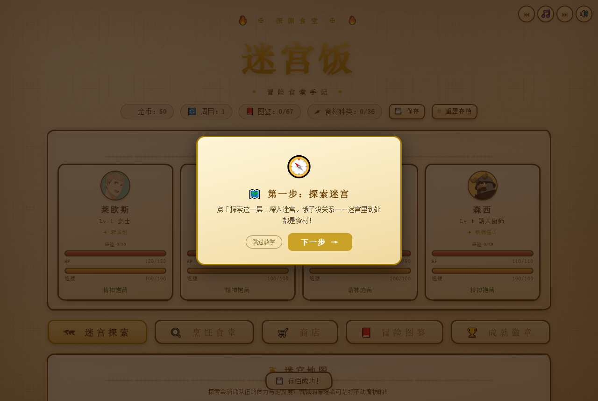
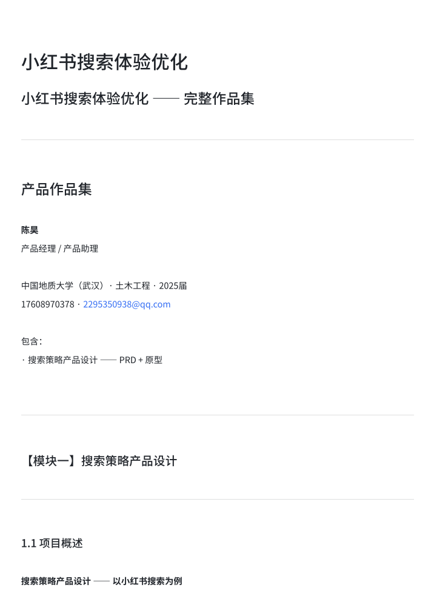

关于我
About土木工科训练了我的逻辑、数据与风险控制；主动转型产品后，用一年时间把「想法」变成「上线产品」。 我不把「AI 协作」当噱头，而是把它当成可管理、可验收、可复用的产品能力——每个项目都有清晰的决策记录、数据口径与迭代轨迹。
2021 – 2025
中国地质大学（武汉）· 土木工程 · 本科 （自学产品方法论、SQL、Python、大模型与 Agent 开发）
2025.07 – 至今
全职 AI 产品自研：独立交付 4 个上线产品并持续迭代 （葉光館 / GearPick / 办公Agent / 迷宫饭），另产出搜索方案与竞品分析
我的贡献 vs AI 的贡献
My Role✓ 我 · 产品决策者
- 产品定义与定位（做什么 / 不做什么 / 给谁做）
- 用户研究与需求拆解（访谈、痛点、优先级）
- 信息架构、交互流程、高保真原型
- 验收标准与迭代策略（每版改什么、为什么）
- 数据口径与指标体系（成功怎么衡量）
⚙ AI · 执行团队
- 编码实现（Claude Code / Codex 等驱动开发）
- 自动化管线（拉取 → 去重 → 合规 → 构建 → 部署）
- AI 多智能体并行产出（策划 / 美术 / 剧情）
- 文本 / 代码生成与初步校验
💡 原则：AI 负责「把方案做出来」，我负责「决定做什么、为什么这么做、怎么算做好」。每个项目的核心决策与数据口径都是我的产品判断，欢迎面试时直接拷问。
项目
Projects
GearPick · FPS 外设智能推荐
AI 产品 · 数据策略 · 已上线
🎙 会议录音
→
🗣 语音转写
→
📝 AI 摘要
→
📤 自动分发
办公自动化 Agent + 智能聊天机器人
AI 应用 · 已落地把「转写 → 摘要 → 分发」全链路做成可复用的 Agent 工作流，用 Hermes + Codex 编排。
2h→15min
单场会议处理
≈+80%
效率提升
3段
可替换管线
多模型
记忆 + 可切换
我的角色
独立完成：全链路流程设计、Agent 编排、验收标准定义。
核心决策
按「转写→摘要→分发」三段拆解，每段可独立替换模型与兜底；摘要模板面向「会后行动项」而非全文复述；多轮助手支持记忆与多模型切换，可复用到飞书会议助手。
结果
2 小时会议 15 分钟处理完毕，效率约 +80%（全流程耗时对比口径）。

葉光館 · 同人艺术展示社区
C 端 · 从 0 到 1 · AI 自动化 · 已上线
面向同人插画创作者的轻量作品展示社区：单人完成竞品调研 → 信息架构 → 高保真原型 → 开发上线 → 迭代的完整产品全流程。
2700+
自动管理作品
13版
30 天迭代
13页
高保真原型
3语8主题
国际化 & 视觉
我的角色
独立产品负责人：竞品调研（Pixiv/Lofter/米画师）、信息架构、原型、上线与迭代。
核心决策
差异化定位「零广告、零算法、零运维」；AI 全自动同步管线（拉取→去重→合规→构建→部署）替代人工运维；三语（中/英/日）+ 8 主题低门槛个性化。
结果
v1.0 → v5.2 共 13 版迭代，2700+ 作品自动管理与合规筛选，数据零丢失（备份 + 只增不删策略）。

迷宫饭 · 美食地下城网页游戏
游戏策划 · AI 多智能体协作 · 可玩上线
基于《迷宫饭》IP 的奇幻美食 RPG：以产品经理视角主导策划与验收，用 AI 多智能体协作完成开发。
6层
迷宫
31
魔物（4 BOSS）
36
菜谱
29
成就
我的角色
产品策划与验收负责人：核心循环、数值曲线、经济系统、层级解锁与周目机制。
核心决策
核心循环「探索→战斗→食材→烹饪→成长」闭环；数值公式显式化（魔物强度 = 周目×1.3×层数×1.18×BOSS）；终局 BOSS 后移制造「终局感」；AI 多智能体（策划/美术/剧情）并行开发，全程验收修复 15+ bug。
结果
6 层迷宫 / 31 魔物 / 36 菜谱 / 36 事件 / 29 成就 / 周目循环，可玩上线（含第 6 层终局 BOSS 饕宴王）。
前台操控（竞品）抢占光标与焦点，用户只能等；像素坐标，分辨率一变就崩
背景模式（Anthropic）不抢焦点，用户可并行工作；SOM 视觉定位，跨分辨率稳定
Claude Computer Use · AI 产品深度拆解
AI 产品研究 · 深度拆解对 Anthropic 桌面操控能力的系统性产品拆解：为什么这不是「更强的自动化」，而是交互范式迁移。
6维
产品决策拆解
3类
竞品矩阵
2重
安全护栏
1个
市场空窗
核心洞察
背景模式 vs 前台操控 = 「信任优先于便利」；SOM 定位 = 选最不容易出错的方案；安全 = 硬编码护栏 + 用户确认，不依赖模型判断；Agent Cursor = 技术可省、产品不能省的可见性设计；信任才是转化瓶颈。
结果
系统性拆解文档，含竞品矩阵（OpenAI Operator / Manus / Copilot Vision）与 RPA 对比。

小红书 · 搜索体验优化
搜索策略 · PRD + 方案